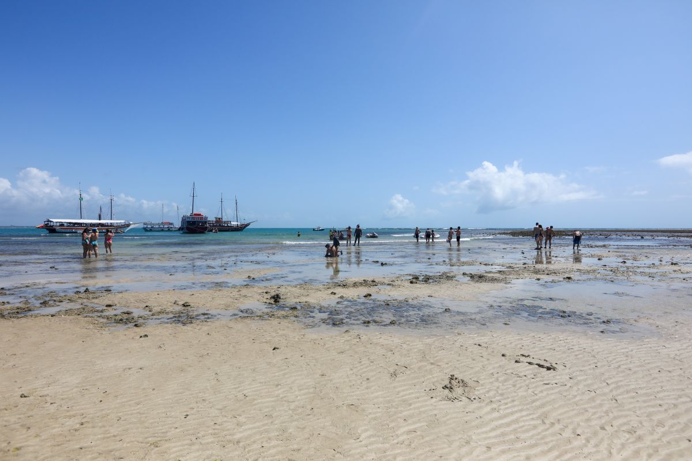
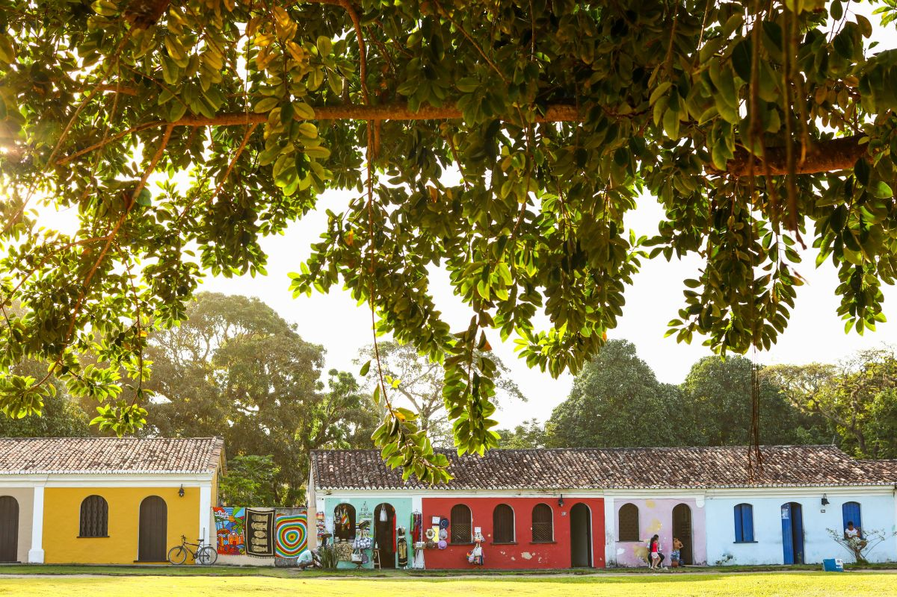
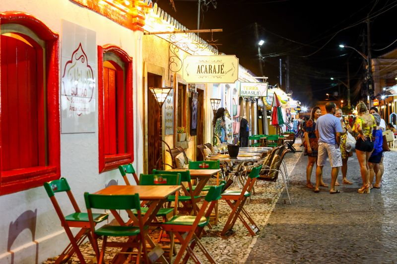

O que fazer em Porto Seguro?
Porto Seguro é um destino repleto de lindas praias, pontos turísticos históricos e ótimos passeios para curtir durante os dias de viagem. Na cidade, também não faltam opções para quem deseja barracas animadas, vida noturna, bons restaurantes e até algumas compras. Ao visitar Porto Seguro, prepare-se para uma agenda intensa, mas não deixe de incluir alguns momentos para descanso, afinal, você também merece relaxar e curtir o visual incrível da Costa do Descobrimento. Confira nossas dicas do que fazer em Porto Seguro e aproveite cada minuto neste pedacinho mágico da Bahia.
Vá a todas as praias de Porto Seguro
Porto Seguro oferece praias incríveis. E é exatamente a variedade de
faixas de areia que atrai tantos turistas para a região. É possível
curtir desde praias tranquilas às que oferecem muito agito. E se o
tempo permitir, vale ainda explorar as praias de regiões vizinhas,
como Arraial d'Ajuda, Trancoso, Santa Cruz Cabrália, Santo André e até
Caraíva.
As praias mais famosas de Porto Seguro são a Praia de Taperapuã, a
Praia do Mutá e a Praia Coroa Vermelha (que está localizada em Santa
Cruz Cabrália). Taperapuã atrai especialmente os turistas que buscam
agito, boa infraestrutura, um lindo mar e as famosas megabarracas,
entre elas a Tôa Tôa e a Axé Moi. Já as vizinhas Praia do Mutá e Praia
Coroa Vermelha são muito procuradas por família que desejam um bom
restaurante e mar piscininha para curtir com os pequenos.
Faça o passeio de barco para o Parque Marinho de Recife de Fora
O Parque Marinho de Recife de Fora é um dos melhores passeios em Porto Seguro e visita imperdível para quem ama mergulho e piscinas naturais. O trajeto até o Recife de Fora é realizado em escunas que partem de Porto Seguro e navegam por 45 minutos até chegar à grande formação de corais, onde você poderá observar a vida marinha da região. Durante o passeio, com custo a partir de R$ 110 por pessoa, você poderá praticar snorkeling, relaxar nas piscinas naturais e ainda fazer lindas fotos nos bancos de areia que se formam no meio do mar. São duas horas para curtir com calma os cenários mágicos do Recife de Fora.
Faça um city tour pelo Centro Histórico de Porto Seguro
Porto Seguro reserva um lado histórico que merece toda a atenção dos viajantes. Que tal investir em um passeio guiado pelos principais pontos turísticos da cidade para entender um pouco melhor como tudo começou? Vale contratar um guia ao chegar ao centro histórico para uma volta nos principais monumentos ou contratar um tour completo, com paradas em diferentes pontos da cidade, entre eles o local da primeira missa, em Santa Cruz Cabrália. Após aprender um pouquinho mais sobre a história da conquista das terras de Porto Seguro, corra para um bom banho de mar!
Curta a balada em Porto Seguro
Muita gente visita Porto Seguro apenas pelo clima de balada e a festa por lá não tem hora para acontecer. É possível curtir o agito a qualquer hora do dia, a começar pelas megabarracas. Lugares como Tôa Tôa e Axe Moi animam os turistas quase 24h, seja com shows diurnos ou luaus. E como essas não são as únicas barracas festeiras em Porto Seguro, será fácil encontrar agito à beira-mar, incluindo festas mais intimistas ou com outros estilos musicais, como no Boa Beach e Beat Beach. Outro ponto famoso de Porto Seguro para os mais animados é a Passarela do Álcool (rebatizada de Passarela do Descobrimento), que ainda mantém o ar jovial e festeiro do passado, mesmo já tendo sido tomada por lojinhas, feira e restaurantes. Se você é do time que gosta de aliar tudo no mesmo lugar, uma boa pedida é seguir até a noite de Arraial d'Ajuda, onde o destaque é a Rua do Mucugê. Ela é tão amimada quanto a Passarela do Álcool, mas tem um toque de charme a mais. Confira mais detalhes sobre a noite de Porto Seguro.
Aproveite os restaurantes de Porto Seguro
Porto Seguro tem uma grande oferta de restaurantes que atendem a todos os gostos e bolsos. Durante o dia, o mais comum entre os turistas é aproveitar os restaurantes das cabanas à beira-mar. O preço é um pouco salgado, não vamos negar, mas sempre é possível encontrar opções de pratos mais econômicos. Todo cardápio tem um bom PF para não pesar no bolso e também uma deliciosa moqueca para quem deseja ir um pouquinho além do básico. Já à noite, será mais fácil encontrar opções econômicas, mesmo na Passarela do Descobrimento, onde está a maior concentração de restaurantes em Porto Seguro. Se estiver na dúvida sobre onde comer, confira nossas dicas sobre os restaurantes de Porto Seguro.